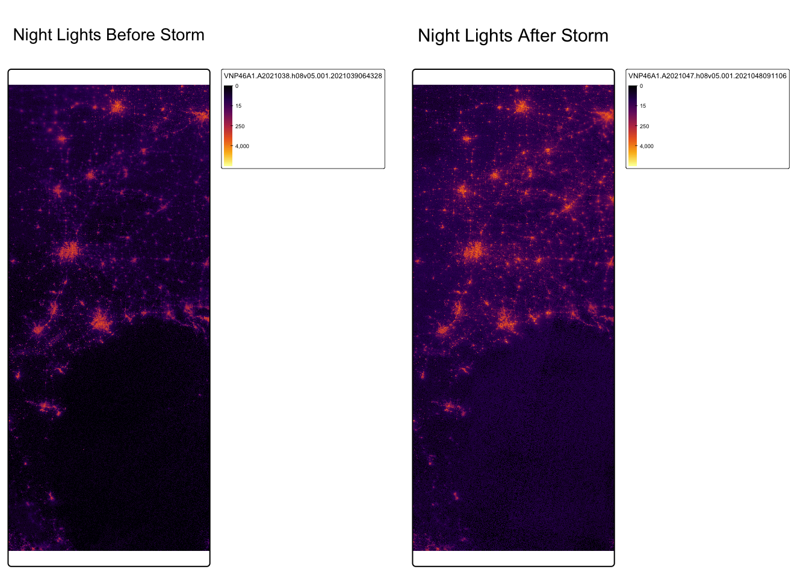

# Load in packages
library(terra)
library(sf)
library(tmap)
library(tidyverse)
library(kableExtra)
# Load in the Data
pre_storm <- merge(
terra::rast(
'/Users/cuvlin/Documents/MEDS/eds223/eds223-hw4-how-did-it-snow-in-texas/data/VNP46A1/VNP46A1.A2021038.h08v05.001.2021039064328.tif'
),
terra::rast(
'/Users/cuvlin/Documents/MEDS/eds223/eds223-hw4-how-did-it-snow-in-texas/data/VNP46A1/VNP46A1.A2021038.h08v06.001.2021039064329.tif'
)
) # Scale factor to turn from datanumber into reflectance
post_storm <- merge(
terra::rast(
'/Users/cuvlin/Documents/MEDS/eds223/eds223-hw4-how-did-it-snow-in-texas/data/VNP46A1/VNP46A1.A2021047.h08v05.001.2021048091106.tif'
),
terra::rast(
'/Users/cuvlin/Documents/MEDS/eds223/eds223-hw4-how-did-it-snow-in-texas/data/VNP46A1/VNP46A1.A2021047.h08v06.001.2021048091105.tif'
)
) # Scale factor to turn from datanumber into reflectance
roads <- st_read(
'/Users/cuvlin/Documents/MEDS/eds223/eds223-hw4-how-did-it-snow-in-texas/data/gis_osm_roads_free_1.gpkg',
query = "SELECT * FROM gis_osm_roads_free_1 WHERE fclass='motorway'"
)
buildings <- st_read(
'/Users/cuvlin/Documents/MEDS/eds223/eds223-hw4-how-did-it-snow-in-texas/data/gis_osm_buildings_a_free_1.gpkg',
query = "SELECT *
FROM gis_osm_buildings_a_free_1 WHERE (type IS NULL AND name IS NULL) OR type in ('residential', 'apartments', 'house', 'static_caravan', 'detached')"
)EDS 223 HW4 Final Markdown File
Author: Calvin Fu
The following markdown file contains all of the data loading, wrangling, and analysis required to complete homework 4 for EDS223.
Loading in Data and Packages
The following code loads in all the packages and data needed for this analysis
Reproject all objects to same CRS:
We are working spatially so we need to make all the objects of the same crs.
Exploration of the Rasters
In order to work with these rasters its important to know some more information about them. The following code is my exploration.
[1] "VNP46A1.A2021038.h08v05.001.2021039064328"[1] 1Visualizing the night lights before and after the storm:
pre_map <- tm_shape(pre_storm) +
tm_raster(col.scale = tm_scale_continuous_log1p(values = "inferno")) +
tm_title('Night Lights Before Storm')
post_map <- tm_shape(post_storm) +
tm_raster(col.scale = tm_scale_continuous_log1p(values = "inferno")) +
tm_title('Night Lights After Storm')
tmap_arrange(pre_map, post_map, ncol = 2)
Creating blackout mask
The following code creates the blackout mask. A change in night lights intensity is considered a blackout if the intensity drops more than 200 nW per cm^-2 sr^-2.
# Create raster of change in night lights
delta_light <- pre_storm - post_storm
# Reclassify difference raster using 200 as the threshold
blackout_rcl <- matrix(
# reclassification matrix
c(-Inf, 200, NaN, 200, Inf, 1),
ncol = 3,
byrow = TRUE
)
blackout_mask <- as.factor(classify(delta_light, rcl = blackout_rcl)) # reclassification function
# Vectorize the blackout mask
blackout_vector <- st_as_sf(as.polygons(
blackout_mask,
aggregate = TRUE
)) |>
st_make_valid()
# Crop the blackout mask to the Houston area
houston_bbox <- matrix(
c(
-96.5,
29,
-96.5,
30.5,
-94.5,
30.5,
-94.5,
29,
-96.5,
29
),
ncol = 2,
byrow = TRUE
) |>
list() |>
st_polygon() |>
st_sfc(crs = crs)
blackout_cropped <- st_crop(blackout_vector, houston_bbox)
# Reproject cropped blackout to EPSG:3083
blackout_cropped <- st_transform(blackout_cropped, crs = 'EPSG:3083')Exclude highways from the cropped blackout mask
Highways experienced a lot of changes in their night light intensities that are not related to the storm. The following chunk of code removes all areas within 200m of a highway from the final blackout mask.
# Create shape with 200m buffer from all highways
highways_buffer <- st_buffer(roads, dist = units::set_units(200, 'm')) |>
st_union()
# Reproject to EPSG:3083
highways_buffer <- st_transform(highways_buffer, crs = 'EPSG:3083')
# Remove highway areas from the blackout vector
blackout_hwy <- st_difference(blackout_cropped, highways_buffer)Identify the number of homes likely impacted by blackouts
The following chunk of codes will identify the number of homes affected by the blackouts by counting the number of homes that intersect with the blackout mask we created above.
# Reproject homes to the texas CRS
buildings <- st_transform(buildings, crs = 'EPSG:3083')
# Find the number of homes in the blackout areas
affected_homes <- st_intersection(buildings, blackout_hwy)
affected_home_count <- affected_homes |> st_drop_geometry() |> nrow()
print(c('Count of homes in the blackout area:', affected_home_count))[1] "Count of homes in the blackout area:"
[2] "322146" The following code creates a map of the affected homes in houston:
Houston, we have a problem…
In the code chunk above, I identified all the houses that fell in the blackout region we created. We counted the total number of houses that fell in this region, and it turns out there were approximately 322146 homes affected. With regard to the residents of houston, this is a really large scale outage. Over 300,000 homes may account for millions of peope that were left powerless in below zero temperatures. Its clear that this outage was widespread, and hopefully gave light to fundamental issues in the city infrastructure. With strong El Nino storms yet to come, its important to understand the magnitude of the these effects.
The main limitation of this study is that we are using remotelys ensed night light data, which is not a direct source of information on whether a home lost power. It is a proxy dataset.